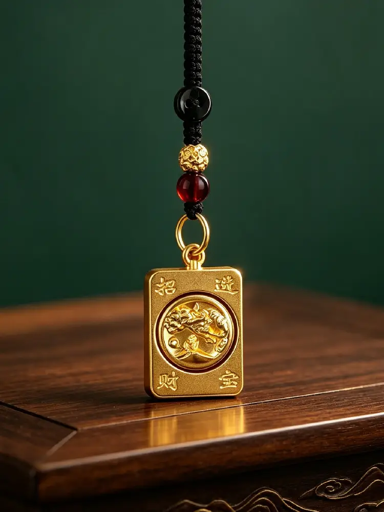
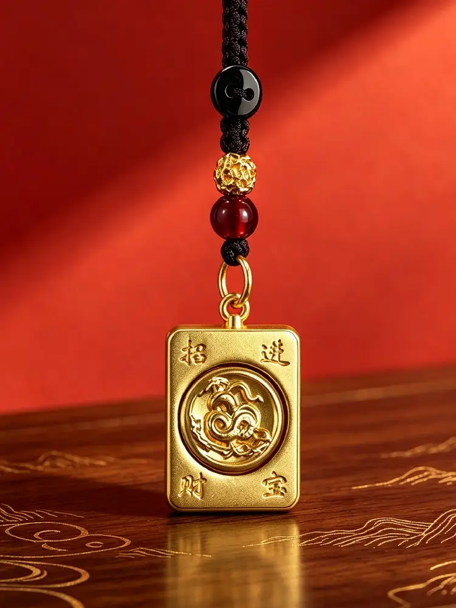
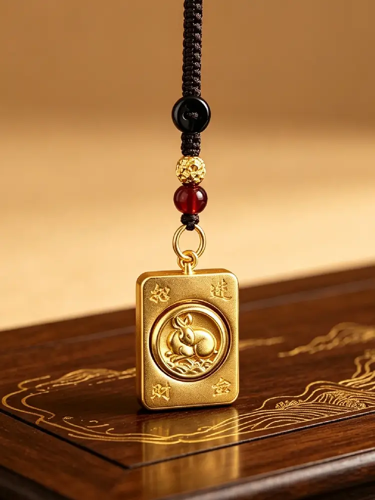

В древнем Восточном Китае люди наблюдали за движением солнца и луны и сменой сезонов. Они обнаружили, что природные ритмы завершают полный цикл примерно каждые двенадцать лет. Поэтому они выбрали двенадцать представителей животного мира и создали китайскую систему зодиака — традицию летоисчисления, передаваемую на протяжении тысячелетий, и глубоко поэтичный символ в классической восточной культуре.
Двенадцать животных соответствуют двенадцати годам. Каждый год рождения соответствует определённому знаку зодиака, и цикл повторяется каждые двенадцать лет — подобно смене времён года и движению звёзд — упорядоченно, но полно жизни. Именно поэтому китайский зодиак находит отклик за пределами границ и культур: измерение времени через живых существ является универсальным проявлением человеческого воображения.
Многие люди задаются вопросом: почему древние в конечном счёте выбрали крысу, быка, тигра, кролика, дракона, змею, лошадь, козу, обезьяну, петуха, собаку и свинью — а не других животных?
Этот выбор не был случайным. Он основан на тысячелетних наблюдениях за природой и повседневной жизнью. Древние разделили день и ночь на двенадцать двухчасовых периодов и назначили каждому животному время его наибольшей активности — включая домашних животных, диких зверей и даже мифическое существо — отражая всё многообразие жизни.
Крыса (Цзы): Глубокой ночью, когда всё затихает, крысы наиболее активны — самые живые существа в тёмные часы.
Бык (Чоу): В ранние часы быки жуют жвачку. Как самый важный партнёр в земледелии, они олицетворяют возделывание и выносливость.
Тигр (Инь): На рассвете тигры бродят и охотятся — величественный властитель дикой природы.
Кролик (Мао): На заре кролики выходят на поиски пищи. Нежные и спокойные, они перекликаются с мирным утренним светом.
Дракон (Чэнь): Когда поднимается туман и идёт дождь, считалось, что мифический дракон управляет облаками и дождём — единственное легендарное существо среди двенадцати.
Змея (Сы): Когда температура поднимается к середине утра, змеи выползают из нор, чувствуя тепло земли.
Лошадь (У): В полдень лошади скачут с энергией — символизируя безграничную жизненную силу.
Коза (Вэй): Во второй половине дня, когда трава свежа, козы пасутся неторопливо — процветая за счёт щедрости природы.
Обезьяна (Шэнь): Когда послеобеденный зной спадает, обезьяны играют и щебечут в лесу — живые, умные и полные духа.
Петух (Ю): В сумерках петухи возвращаются в курятники. Древние полагались на их крик, чтобы определять время дня.
Собака (Сюй): Вечером, когда в домах зажигаются огни, собаки стоят на страже — охраняя покой ночи.
Свинья (Хай): Поздней ночью свиньи спят крепко — олицетворяя комфорт, удовлетворённость и лёгкую жизнь.
Помимо этого, есть более глубокий философский слой: эти двенадцать существ включают птиц, зверей, диких животных, домашних животных и мифических существ — каждое со своим характером. Одни нежные, другие смелые, одни умные, другие спокойные. Вместе они отражают многообразие человеческой натуры. Древние тем самым напоминали нам: каждое существо имеет свой уникальный дар, и каждый человек имеет свои сильные стороны.
Примечание: народная сказка о гонке зодиака — это любимая легенда; основанное на времени наблюдение признаётся учёными как историческое происхождение.

Изображение: Изготовленный из сплава с золотым покрытием и выполненный в форме классической плитки для маджонга, этот компактный подвесной талисман имеет объёмный рельеф животного зодиака на лицевой стороне, а на оборотной стороне — традиционный китайский иероглиф «發» (процветание) – вечный символ удачи и изобилия.
Крыса: Быстроумная и внимательная — символизирует обнаружение богатства и новых возможностей.
Бык: Стойкий и трудолюбивый — олицетворяет награду, приходящую от упорных усилий.
Тигр: Храбрый и защищающий — символизирует смелость и охрану мира.
Кролик: Нежный и успокаивающий — олицетворяет мирную, счастливую и гладкую жизнь.
Дракон: Иконический символ удачи — олицетворяет рост, прогресс и стремительный успех.
Змея: Проницательная и уравновешенная — символизирует мудрость и спокойствие перед лицом вызовов.
Лошадь: Энергичная и страстная — олицетворяет движение вперёд и достижение целей.
Коза: Добрая и дружелюбная — символизирует гармонию, полноту и долговременные благословения.
Обезьяна: Умная и оптимистичная — олицетворяет адаптивность и способность отпускать заботы.
Петух: Дисциплинированный и позитивный — символизирует свет, удачу и надежду на будущее.
Собака: Верная и надёжная — олицетворяет долговременную безопасность, дружбу и устойчивый прогресс.
Свинья: Щедрая и довольная — символизирует изобилие, комфорт и лёгкую жизнь.
Этот подвесной талисман зодиака выполнен в форме классической китайской плитки для маджонга — квадратной с закруглёнными углами, отражающей традиционную восточную эстетику баланса и порядка. Поверхность выполнена в технике объёмного рельефа, а центральный диск может свободно вращаться, неся прекрасное благословение «поворота удачи». Вращающийся дизайн также перекликается с двенадцатилетним циклом зодиака.
Форма и дизайн:
Подвесной талисман выполнен по образцу классической плитки для маджонга — размером 2,2 см × 3,5 см и толщиной 1 см. Компактный и изящный, его сбалансированная форма отражает традиционную восточную эстетику стабильности и благопристойности. Все двенадцать зодиакальных дизайнов могут быть расположены в круговом порядке, создавая визуально симметричную и явно современную китайскую атмосферу.
Детали мастерства:
Материал и рельефная скульптура: Корпус подвесного талисмана отлит из металла с матовым золотым покрытием. Круглая область в центре содержит объёмный рельеф животного зодиака с тонкой, сложной детализацией. Лицевая сторона демонстрирует зодиакальный рельеф с благоприятной фразой «招财进宝» (Привлечение богатства и сокровищ) в четырёх углах, в то время как оборотная сторона имеет классический зелёный иероглиф «發» (Процветание) — сочетая игривые благословения культуры маджонга с дизайном, вдохновлённым зодиаком.
Вращающийся центральный элемент:
Центральный зодиакальный диск может свободно вращаться, перекликаясь с двенадцатилетним циклом и неся мягкое пожелание «чтобы удача повернулась, заботы ушли, а удача пришла» — успокаивающее, интерактивное прикосновение.
Детали шнура и бусин:
Подвесной талисман поставляется с плетёным тёмно-коричневым шнуром, дополненным чёрным узлом мира, золотыми бусинами-прокладками и бордовыми бусинами. Классическая чёрно-золото-красная палитра одновременно элегантна и вечна. Прочная металлическая застёжка позволяет прикрепить его к ключам, сумке или носить как подвеску — лёгкий и универсальный для повседневного использования.
На лицевой стороне изображено традиционное благословение «招财进宝» (Привлечение богатства и сокровищ), а на оборотной стороне — классический иероглиф «發» (Процветание) — простые народные пожелания хорошей жизни. Плетёный узел и землистые тона бусин воссоздают текстуру традиционных китайских аксессуаров, делая этот компактный, элегантный элемент дополнением к ключам или сумкам.
Форма плитки маджонга несёт игривое благословение «хороших карт, хороших результатов» из традиционной игровой культуры. В сочетании со знаком зодиака владельца это создаёт двойной смысл: зодиак как личный символ на всю жизнь, а благоприятные иероглифы выражают пожелания процветания и благополучия. Поскольку доступны все двенадцать зодиакальных дизайнов, каждый может найти изделие, соответствующее своему году рождения — объединяя тысячи лет восточного летоисчисления, традиционного резного искусства и сердечных благословений в небольшом переносном талисмане. Носить его — значит нести с собой уникальную часть китайского культурного наследия — тихую, красивую поэзию древности и повседневную защиту.
Годы зодиака по животным (1940–2046)
Примечание: Китайский зодиак основан на лунном календаре. Если вы родились до китайского Нового года (обычно в январе или феврале), ваш знак — животное предыдущего года.
Крыса: 1948, 1960, 1972, 1984, 1996, 2008, 2020, 2032, 2044
Бык: 1949, 1961, 1973, 1985, 1997, 2009, 2021, 2033, 2045
Тигр: 1950, 1962, 1974, 1986, 1998, 2010, 2022, 2034, 2046
Кролик: 1951, 1963, 1975, 1987, 1999, 2011, 2023, 2035
Дракон: 1940, 1952, 1964, 1976, 1988, 2000, 2012, 2024, 2036
Змея: 1941, 1953, 1965, 1977, 1989, 2001, 2013, 2025, 2037
Лошадь: 1942, 1954, 1966, 1978, 1990, 2002, 2014, 2026, 2038
Коза: 1943, 1955, 1967, 1979, 1991, 2003, 2015, 2027, 2039
Обезьяна: 1944, 1956, 1968, 1980, 1992, 2004, 2016, 2028, 2040
Петух: 1945, 1957, 1969, 1981, 1993, 2005, 2017, 2029, 2041
Собака: 1946, 1958, 1970, 1982, 1994, 2006, 2018, 2030, 2042
Свинья: 1947, 1959, 1971, 1983, 1995, 2007, 2019, 2031, 2043

Подвеска-талисман «Собака» (знак зодиака) на удачу

Подвеска-талисман «Обезьяна» (знак зодиака) на богатство

Подвеска-талисман «Тигр» (знак зодиака) на удачу

Подвеска-талисман «Петух» (знак зодиака) – оберег

Подвеска-талисман «Дракон» (знак зодиака) на удачу

Подвеска-талисман «Лошадь» (знак зодиака) на богатство

Подвеска-талисман «Свинья» (знак зодиака) на удачу

Подвеска-талисман «Бык» (знак зодиака) на богатство

Подвеска-талисман «Змея» (знак зодиака) на удачу

Подвеска-талисман «Крыса» (знак зодиака) на удачу

Подвеска-талисман «Кролик» (знак зодиака) – оберег

Подвеска-талисман «Коза» (знак зодиака) на богатство